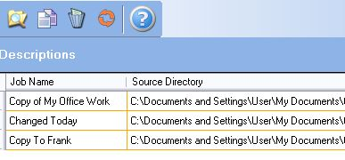
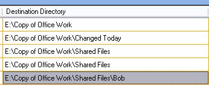

What can I do with Llama Carbon Copy?
Llama Carbon Copy is suited to several functions. Those functions include duplicating your important files,
delivering files to another person or group of people in your office, and automatically tracking
which files have changed over a period of time.
Uses
Often it is necessary to take some work home with you. Llama Carbon Copy makes it easy to keep a current copy of your work
on a USB drive or external hard drive. First, create a job to watch your work folder (detailed instructions on how to create a
job can be found here):
Then select the your original and copy folders taking care to make sure that the copy folder is on the USB drive or external hard drive.
That is all that is required to automatically watch your changing work during the day. When you are ready to leave, you avoid waiting for
your files to copy.
If you aren't sure that your files are up to date, click on the synchronize all icon to ensure all files are up to date.
All your files will be checked and recopied if necessary. Llama Carbon Copy displays a list of all files for the selected job
along with their status. You will also see "Synchronization Finished" in the progress indicator at the bottom of the screen.
Save time and avoid irritation and errors by letting Llama Carbon Copy keep track of your changed files.
First create a job to watch the files you are interested (detailed instructions on how to create a
job can be found here):
Then set the original directory to the directory you are interested in. Follow that by selecting the copy folder to hold the changes.
Continue with your work. Each time you save or alter something in the original folder it will be logged in the copy folder. At the end of the day,
you are left with a list of all altered files and the most up to date versions of those files, perfect for distribution to a coworker or for archiving.
You can easily the the files that have changed in the File History (shown below).
Distribution is made easy with Llama Carbon Copy. Setup a folder where all company wide documents are held. Some examples of documents
that are often standardized across as organization: letterhead, fax cover sheets, standard business contracts, and customer lists. Create a series
of jobs that watch the same folder and copy the files watched there to different computers in your network. This can be done with a single installation of
Llama Carbon Copy. Copy them to your coworker's computers, first
to Frank:

...and then to Joe.
This process is made even easier by using the copy job feature. Select the job you want to copy, and click the copy button.
You will see a copy of the original job (with the words "Copy of" prepended to the original job name).
The job will be completely copied, allowing you to only have to change the copy directory in order to copy standard documents
to Bob's computer.
Just change the directory from Joe's machine to Bob's.

 Try Llama Carbon Copy out for free by downloading our 15 day trial version.
Try Llama Carbon Copy out for free by downloading our 15 day trial version.
 Llama Carbon Copy
Llama Carbon Copy